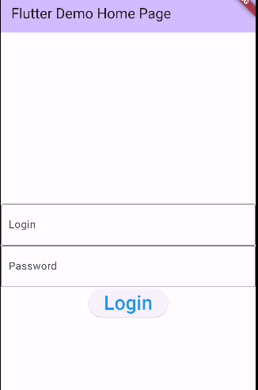
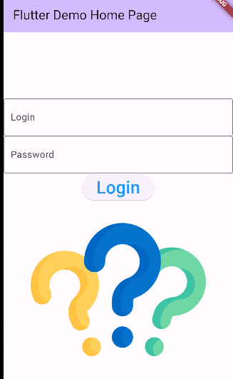
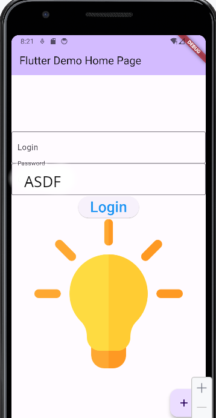
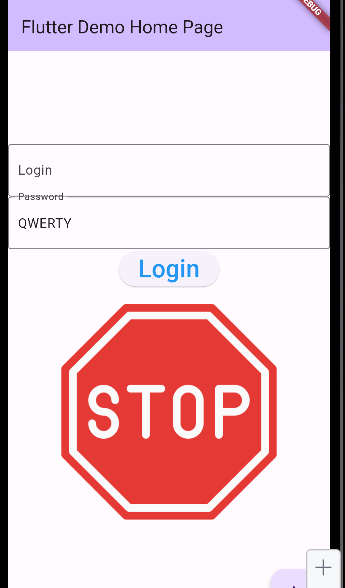

This week, we learned how to use the ElevatedButton, Image, Checkbox, Switch, and TextField.
You should use Github to upload your code to your repository to backup your work. Use the professor's example code to understand
how it works, but reproduce your work in your own lab project. You should not do your lab work in the same project as the source code examples in class.
For this week's lab, you will demonstrate to your lab professor your understanding of this week's material (7 marks):


When the user clicks on the login button, read the string that was typed in the password. If the string is "ASDF", then change the image source to be a light bulb:
. If the string is anything other than "ASDF", then set the image to a stop sign:
To do this, replace the source of the image with a string variable that is initialized to the image: var imageSource = "images/question-mark.jpg"; .You should show these items are completed and working during your normal lab period. You don't need to submit anything for now but you will keep working on your code in next week's lab.